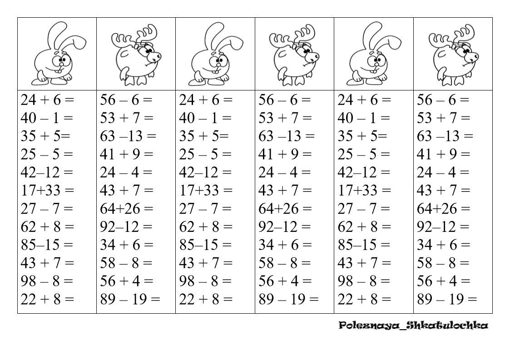
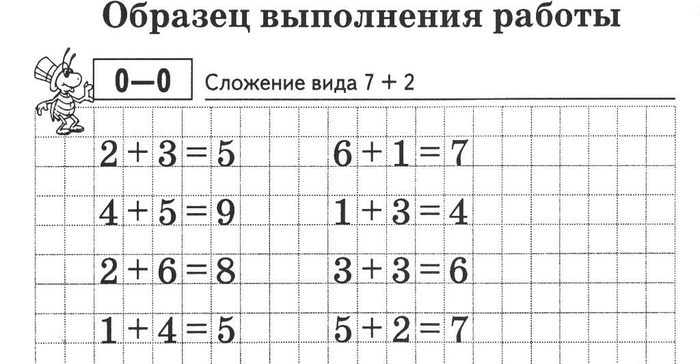

Основы счёта
Урок для начинающих: учимся считать от 1 до 10 с помощью весёлых картинок и игр. Включает задания на распознавание чисел и простые примеры.


Буквы и звуки
Знакомство с буквами русского алфавита: учим звуки, учимся читать слоги и простые слова.


Простые задачи
Решение простых арифметических задач: сложение и вычитание в пределах 10.


Окружающий мир
Изучение природы и окружающего мира: растения, животные, времена года.